Blogitekstit · Heinäkuu 2020
Heinäkuu - pummeja ja onnistumisia

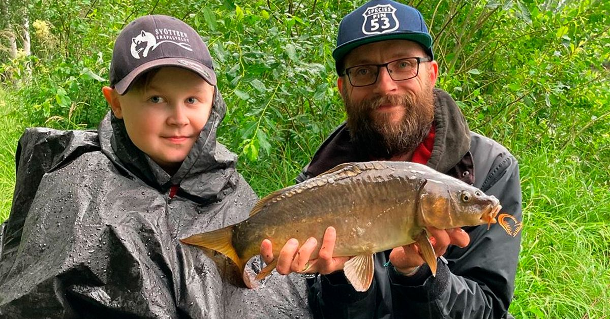
Heinäkuu jatkui sateisena. Kesälomareissun aloitin perheen kanssa Tampereella ja seuraksi Pahalammelle saapui myös Timi sekä Jari Tuiskunen. Sateessa kalasteltiin ja suutareita nosteltiin, kunnes vaihdoin Timin käyttämään parttionkeen ja hetken päästä syöttiä vietiin.
Karppi nousi lajiksi nro. 50 ja antoi hienon alun kuukaudelle. Kotimatkalla olevat Jere ja Teemu pääsivät myös todistamaan karpin nousua ja lisäksi Jere pääsi kokeilemaan parttiongintaa saaden komeita suutareita saaliiksi. Myös Juuso nappasi intin päättymisen kunniaksi karppipisteen Turun lähialueelta.

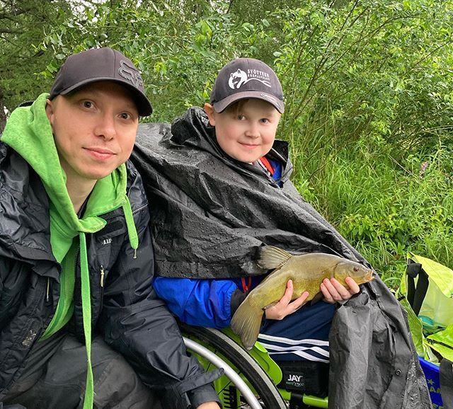
Jeren ja Teemun seikkailupäivitys Instagramista
Puuhapuisto Veijarin alueelta nousi listalle kirjolohi Timin sitomalla perholla ja puronieriä ongella puiston läpi virtaavasta purosta. Tästä vierelusta löytyy retkitarina tästä.
Sulkavajahti ei tuottanut toivottua tulosta. Olimme Harrin ja Eskon kanssa auttamatta pari viikkoa myöhässä. Todella harmittava pummi. Tästä tyhjän pyytämisestä voit lukea tästä.

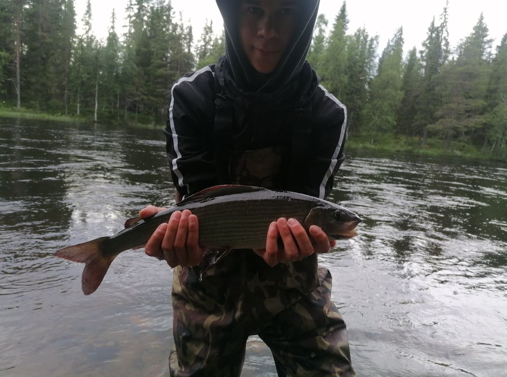
Justus pääsi Kuusingille ja nappasikin Kirveskoskesta upean harjuksen lajipisteeksi nro. 36 ja oli samalla hänelle myös uusi elämänpiste.

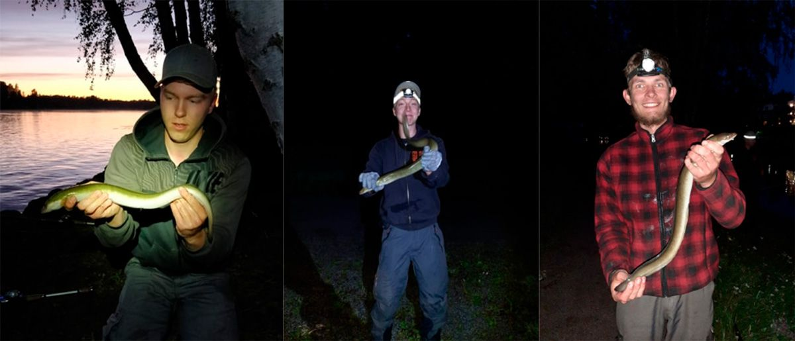
Toinen viikko tarjosi lierojahdissa olleelle kolmikolle kaikille lajipisteen, Miikalle 52, Juusolle 49 ja Olli Saloselle 34 laji kuluvalle vuodelle. Ennen ankeriasreissua kaksi jälkimmäistä nappasivat Loimijoelta sulkava, seipi- ja kivisimppupisteet.

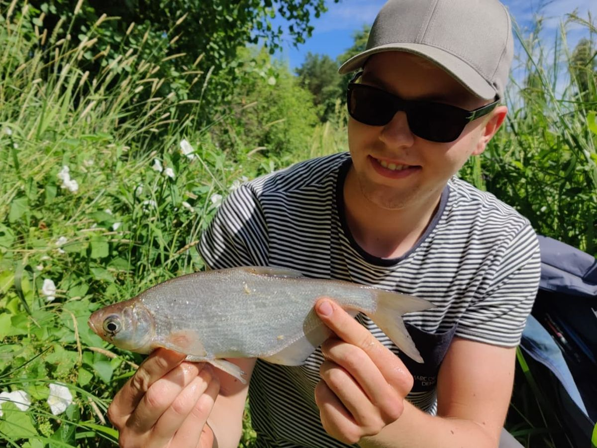
Timin tekemän ennätys rikkoutui lopulta harjuksella, jonka onnistuin nappaamaan Enossa virtaavasta Kuusojasta. Lue retkitarina tästä.

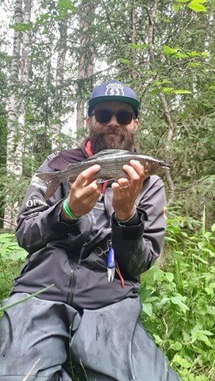
Kovin uutinen heinäkuussa oli, Olli-Pekka Turusen pojan Roopen löytämät nokkakalan poikaset Helsingin Lauttasaaresta. Miettikää mitä tietoa fongarit saavat kerättyä tutkijoille kalalajien esiintymisistä, yhteisön voiman avulla vain taivas on rajana minkä lajin salat seuraavaksi ratkotaan.

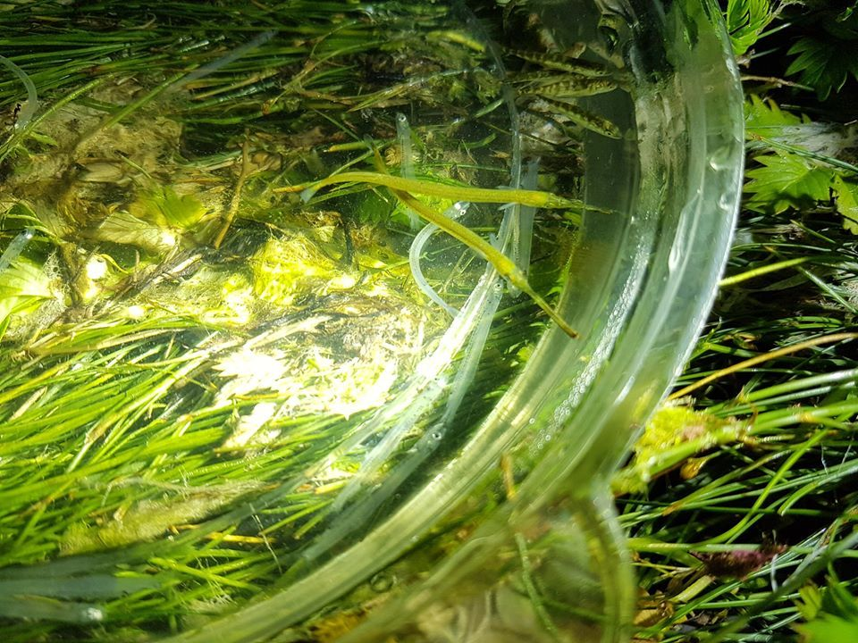
Saarijärvellä pilvien tuijotteluksi mennyt sulkavareissu vaati paikkoreissua ja sellainen tehtiin Timin kanssa Loimijoelle.

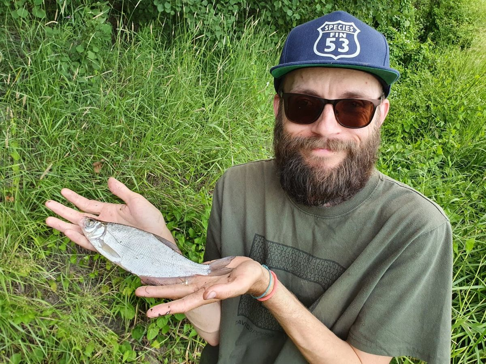
Huittisten alueella muiden fongareiden jalanjäljissä liukkailla rantapenkoilla viisi tuntia se vaati; sulkava nousi lajiksi nro. 54. Retkitarina löytyy tästä klikkaamalla.
Henri Ilman on hiljalleen kivunnut kohti kultakerhoa, viimeisimpänä siperiansampi Myllykosken Ponnilta. On hän kerennyt myös ainoana fongarina käymään Märketillä isosimppu jahdissakin.

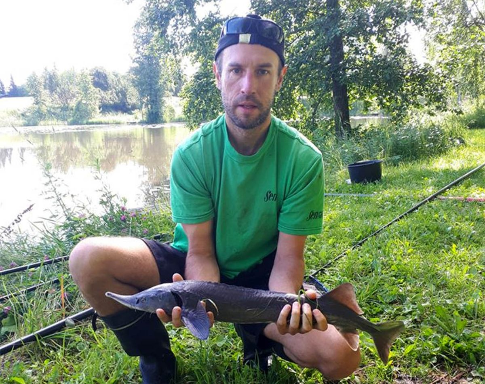
Lappiin lähti myös Miika heinäkuun puolen välin tienoilla. Tuntureilta paluun jälkeen 54 lajimäärään upealla raudulla ja myöhemmin lirkityllä kirjoeväsimpulla. Harjus jäi listalta uupuumaan, mutta pelisävelet on purje-evien jallittamiseen valmiiksi mietitty.

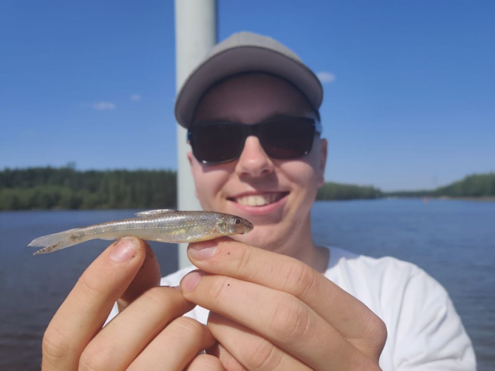
Paikkoreissuun Kotkaan ja Lappeenrantaan lähtivät Juuso ja Olli, tuliaisina Saimaan kanavalta valkoevätöröt mieheen. Törön lisäksi Olli nappasi Kotkasta mudun, törön, kuhan ja sorvan. Mainittakoot, että mittakuha nousi litkalla kanavasta. Valkoevätörö nosti Juuson 50 lajiin ja samalla viidenneksi fongariksi platinakerhoon.
"Onhan se hieno saavutus! Vähän toki kalvaa pettymys rantanuoliaisesta ja miekkasärjestä, mutta kaikkea ei voi saada. Kaikkemme tehtiin. Oon silti tosi tyytyväinen että tuli edes valkoevätörö, niin ei tullut toista hukkareissua." -Juuso
Mikael kurvasi rannikon kautta kohti pohjoista ja seipi nousi ensin ja heti yöllä perään kirjoeväsimppu. Paksummasta käsivarresta nousi lopulta myös rautu kolmanneksi lajipisteeksi lomareissulla.
Myös Joensuun suunnilta kajahti kirjoeväsimppu onnistumisia, kun Kalamaratonista ja Lesnan naputtajista tutut Ikosen Ville ja Tatu Osku Martiskainen nappasivat lirkillä kirjoeväsimput elämänpisteiksi "kotivesiltään".

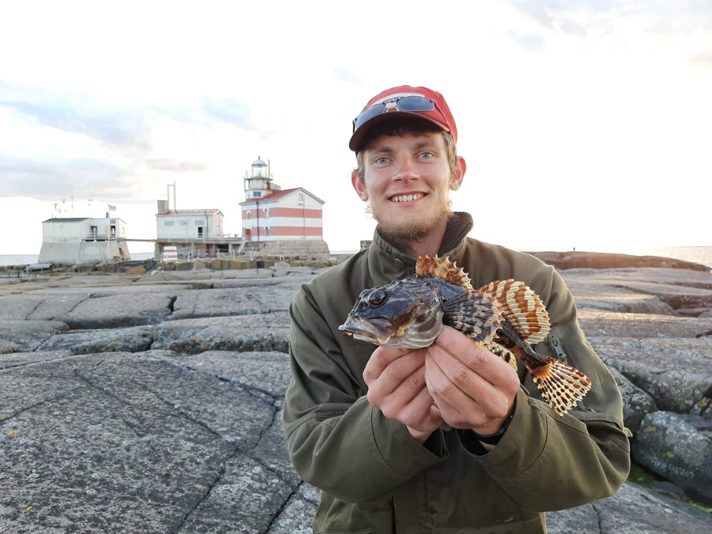
Miika jatkoi lajijahtia Myllykosken karppilammella saadeen saaliikseen vain sivuosomia. Uusia lajipisteitä nousi retkellä Märketin -majakkasaarelle Juuso ja olli seuranaan. Kaikille mukana olleille isosimput lapipisteeksi, muut lajit loistivat poissaolollaan.
Miikan lajijahti jatkui harjuksen osalta Enossa virtaavalla Kuusojalla. Omasta harjusretkestäni voit lukea tästä.
"Nostan hattua suuresti, että oot täältä harrin saanut. On kyllä top 3 ikävimmistä paikoista missä oon kalastanut. Mä oon jo valmis lyömään hanskat tiskiin ja ajan kohta mielummin takasin Lappiin." -Miika
Heinäkuu toi koko porukan lajilistalle raudun, kirjoeväsimpun sekä siperiansammen. Pyydettävien kalojen lajilista lyhenee ja seuraava mahdollinen uusi laji voi olla esimerkiksi turska tai teisti.
Listalla on nyt yhteensä huimat 58 eri kalajia.
Platinakerholaiset - yli 50 lajia kalenterivuoden aikana pyytäneet

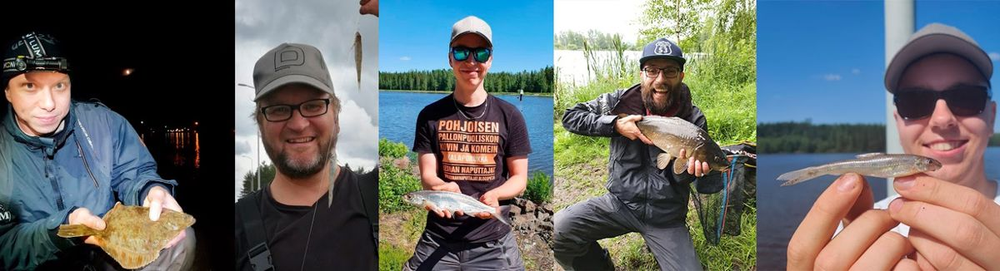
Aikoinaan pidettiin 40 eri kalalajin pyydystämistä maagisena rajana, nykyään tuo raja on kultakerhoon pääsyn rajana. Vuosi vuodelta ylemmäksi ja maaginen raja platinakerhoon pääsyyn on 50 lajissa.
Olen sanonut monelle, että tuon kultakerho rajan saa kasaan, jos tekee muutamat täsmäiskut pitkin vuotta normi kalastuksen lisäksi. Platinakerho vaatii jo suurempaa panostusta, mutta ei se vaikea ole saavuttaa, kun tekee selkeän vuosisuunnitelman.
Platinakerhossa on nyt viisi fongaria, suluissa ennätysvuosi ja platinakerhoon nousun päivämäärä sekä kuinka monta päivää kerhoon pääsyyn meni.
Nuoria kovia kalastajia on innostunut fongauksesta, ja odotankin innolla kenen nimi nousee kerhoon seuraavaksi? Oletko sinä seuraava viisikymppikerholainen?
- 52 (2018) lajia, Laitinen Timi (31.8.2018) - 243 päivää
- 51 (2018) lajia, Jaakkola Mikael (3.11.2018) - 307 päivää
- 56 (2020) lajia, Miika Kovanen (27.6.2020) HUOM: Vuosi kesken! - 178 päivää
- 57 (2020) lajia, Juha Salonen (10.7.2020) HUOM: Vuosi kesken! - 191 päivää
- 57 (2020) lajia, Juuso Triipponen (18.7.2020) HUOM: Vuosi kesken! - 199 päivää
- 50 (2020) lajia, Olli Salonen (26.9.2020) HUOM: Vuosi kesken! - 270 päivää
- 58 koko Lajikalastus 2020 mukana olevien 30.5.2020. - 150 päivää
Heinäkuun voisi tiivistää sanontaan; Ennätykset on tehty rikottavaksi!
Vuorossa elokuu, Mikaelilla mahdollisuus tuplaplatinakerhoon ja muutamalla fongarilla kultakerho lähestyy. Nyt stemppiä loppuvuoteen ja kohti uusia henkilökohtaisia ennätyksiä.
Seuraa ennätyksen etenemistä
Pidän kirjaa lajilistasta ja tarkemmasta retkidatasta Google -taulukossa, joka löytyy jokaisesta ennätysyrityksen postauksesta.
Tästä linkistä taulukko avautuu uuteen ikkunaan.
Seurantatilanne löytyy myös blogini oikeasta yläreunasta.
Vuoden aikana ennätysyrityksessä kulkee mukaan myös tämä kalataitelija-graaffikko Sakke Yrjölän suunnittelema SPECIES FIN 53 -merkki.
Paitakulmassa painatin pipoon ja lippikseen saman merkin. Tavoitteeni on saada aikaiseksi 53 saaliskuvaa tekstin alussa tekemääni taulukkoon joissa kaikissa kuvissa näkyisi tuo kyseinen tunnus.
Paitakulma on Suomalainen perheyritys, joka haluaa panostaa laatuun ja asiakastyytyväisyyteen. Tutustu yrityksen palveluihin tästä.